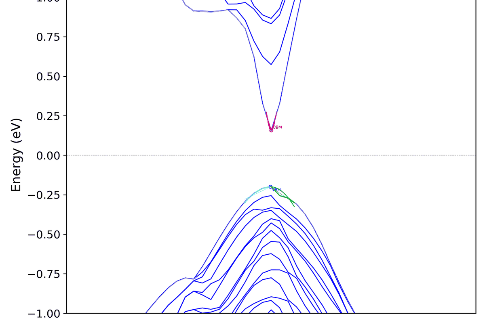

From a plotted band structure to screening descriptors
ABP is built for fast pre-screening before higher-cost first-principles follow-up. Every number it reports is an image-derived approximate descriptor with a debug overlay to check — not a replacement for rigorous effective-mass or mobility calculations on the raw band data.
Read the figure alone
Y-axis energy ticks are OCR'd and RANSAC-repaired; high-symmetry labels are recognized per glyph with bilingual eng + ell voting, so Γ survives. The crystal structure is the only declared external input.
Calibrate with real physics
Structure-side segment lengths (Å⁻¹) plus detected separator lines build a piecewise-linear q↔k map, so curvature C = 2A and m*/m₀ = 7.62 / |C| come out in physical units.
Screen in batches
Metallicity rejection, band-gap window, direct-gap tolerance, |C| range and near-linear high-dispersion flags sort every material into traceable, categorized hit folders.

Seven linked parsing stages
Each stage keeps the evidence the next one needs — segment metadata, pixel envelopes, calibration diagnostics — so the final ranking stays reproducible and checkable.
Render Standardized Figures
renderConvert input/ DAT and HDF5 band data into uniform PNGs — the only stage allowed to touch raw data — and record each material's segment boundaries as metadata.
Detect Plot Box, Extract Bands
extractAuto-detect the axes frame, mask band pixels in blue_dark / blue / dark mode, and build the CBM / VBM envelopes around the reference energy.
Read Axes off Any Figure
axes_ocrFor literature figures: OCR the y-axis ticks with arithmetic-progression RANSAC repair, and recognize high-symmetry labels glyph by glyph with eng + ell voting and homoglyph snapping.
Calibrate q↔k per Segment
calibrateCombine structure-side segment boundaries with detected vertical separators into a piecewise-linear map; fall back to OCR of the printed “Path length” when metadata is missing.
Fit the Band Edges
fittingSnap the vertex to the nearest segment node, truncate windows at segment boundaries, de-bias the vertex energy, then fit E − E₀ = A(k − k₀)² on each side with reliability diagnostics.
Reject Metals, Screen the Rest
screeningDrop metals by Fermi-crossing detection, then apply the band-gap window, optional direct-gap requirement, |C| range and near-linear high-dispersion slope thresholds.
Write Traceable Outputs
output · drawEmit English and Chinese CSVs, draw a debug overlay for every figure, and copy hits into per-criterion folders so each candidate can be eyeballed before any expensive follow-up.
Drop data in, answer the prompts, check the overlays
band_screen.py runs interactively by default — press Enter to accept each default. Use --no_interactive for scripted batches. Tesseract's Greek model ships with the repo in tessdata/.
- 01
Install the environment
Python 3 with the pip packages on the right, plus the system
tesseractbinary.pymatgen/mp-apiare only needed for arbitrary-figure mode. - 02
Drop data into
input/Raw DAT or HDF5 band data is rendered automatically. Literature PNGs go straight into
band_images/with their segment JSON; rendering is skipped wheninput/is empty. - 03
Run and review
Answer the prompts — gap window, direct-gap, ΔE_fit, |κ| range — then check
band_curvature_out/: ranked CSVs plus a fit overlay for every material.
pip install numpy pandas matplotlib opencv-python \
h5py pytesseract pymatgen mp-api
# macOS: brew install tesseract
# Linux: apt install tesseract-ocr
python band_screen.pyScripted batch
python band_screen.py --no_interactive --gap_min_eV 0.1 --gap_max_eV 0.5 --direct_gap_onlyAny literature figure
python analyze_band_image.py --image fig3b.png --structure POSCAR --mode darkJSON + debug overlay; --emit_segments_json feeds it into the batch pipeline.
Structure from Materials Project
python analyze_band_image.py --image fig.png --mp mp-149Needs MP_API_KEY; give --labels "G,X,W,L,G" if label OCR misses.
Results that stay traceable to the figure
Every screened material keeps its metrics, diagnostics and annotated figure together under band_curvature_out/.
band_curvature_slope_results(_english).csvPer material: absolute band-edge curvature for all four directions — CBM / VBM × left / right.
band_curvature_full_details(_english).csvAdds k-calibration mode, vertex snapping, separator-detection deviation and reliability flags per row.
debug_images/Every figure re-drawn with its fitted quadratics, band-edge markers and recovered metrics for eyeball QA.
selected_debug_images/Candidates copied per criterion: gap-window semiconductors, |C| threshold, linear high-dispersion, and final_selected.
ABP outputs image-approximate descriptors intended to rank candidates for downstream study. Keep the debug overlay next to every number, and confirm final claims with calculations on the raw band data.
A small package with two thin entry points
Each module owns one stage of the pipeline and documents it in its docstring; the legacy v7 / v8 single-file scripts remain archived under legacy/.
band_screen.py
Interactive entry point: render → parse → screen → categorized outputs.
analyze_band_image.py
Judge any band figure: axes OCR + structure-side segment lengths.
renderDAT / HDF5 → standardized PNGs + segment metadata; the only raw-data stage.
extractPlot-box detection, band-pixel masks, CBM / VBM envelopes.
axes_ocrY-tick OCR with RANSAC repair; Γ-aware high-symmetry label reading.
calibratePiecewiseKmap q↔k mapping, separator detection, OCR fallback.
fittingFixed-vertex quadratic fits with snapping, truncation and de-biasing.
screeningMetallicity detection, candidate evaluation, direct-gap judgment.
kpathStructure → physical segment lengths (Å⁻¹), self-tested vs closed forms.
draw · output · commonDebug overlays, EN / CN CSV writers, shared constants and helpers.